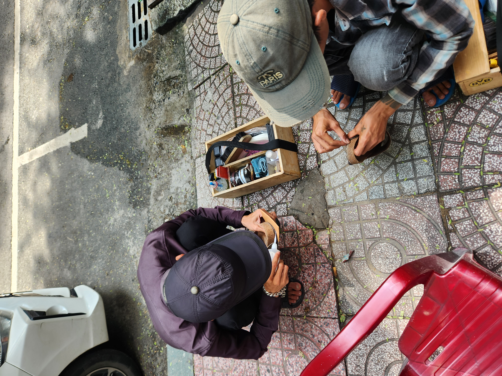
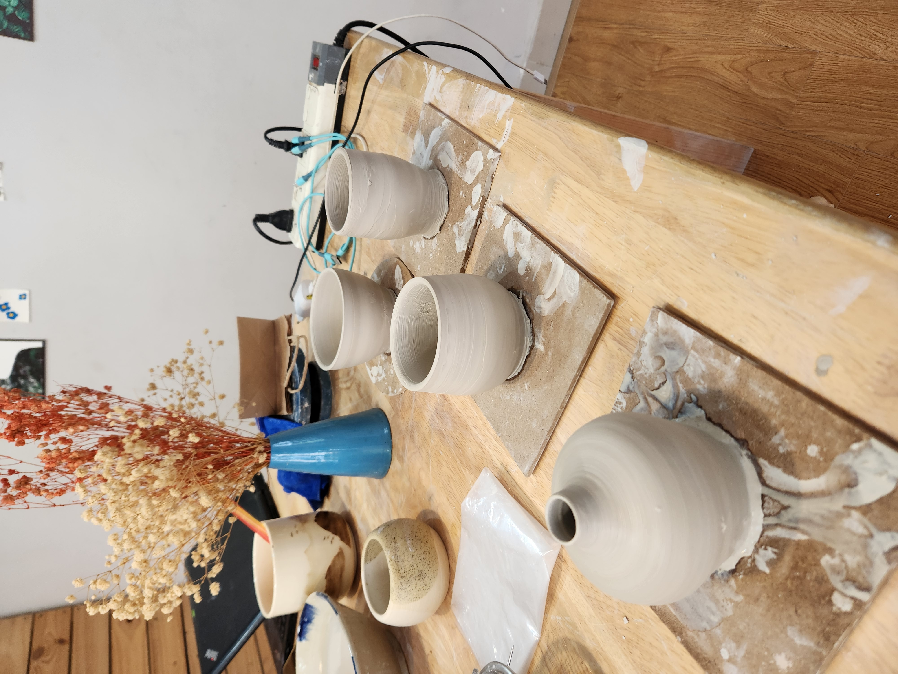
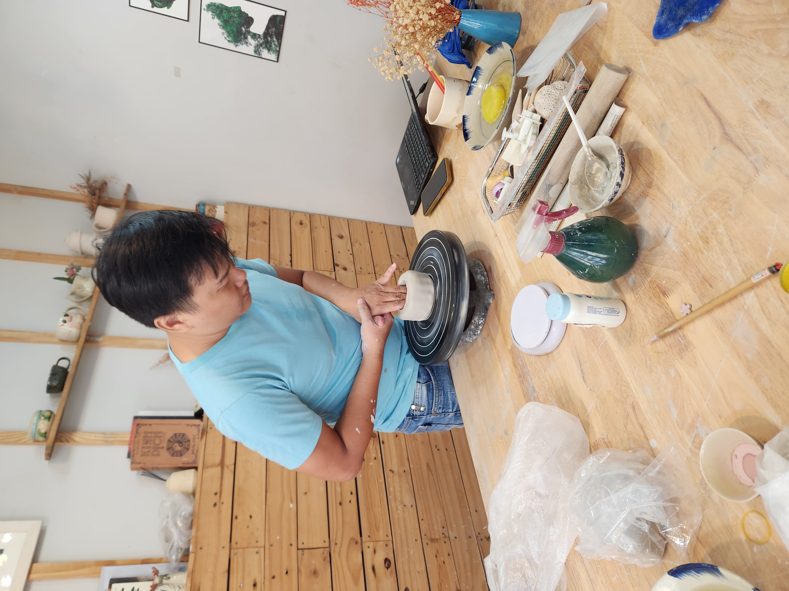
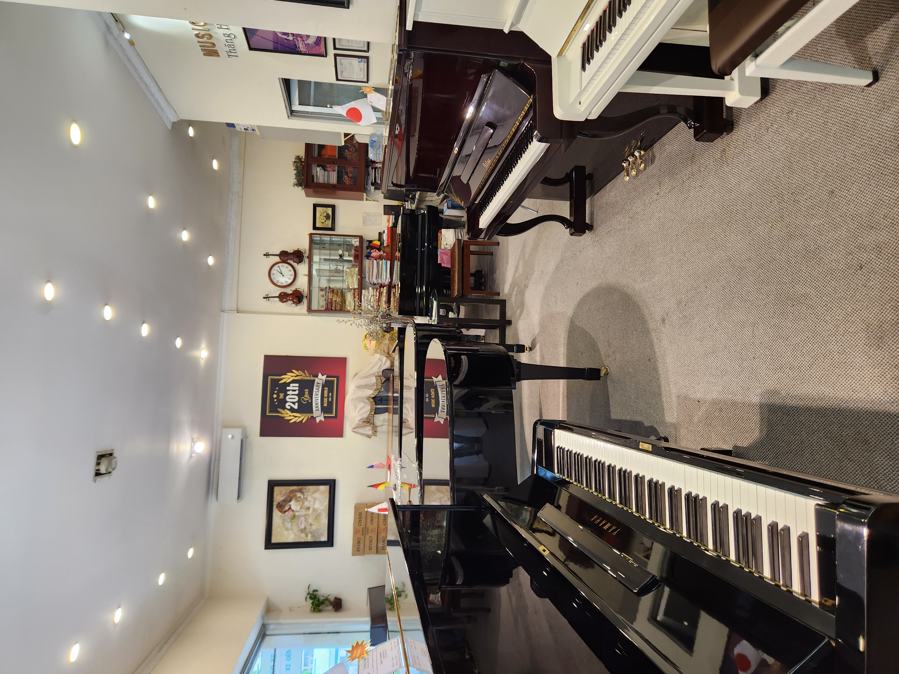
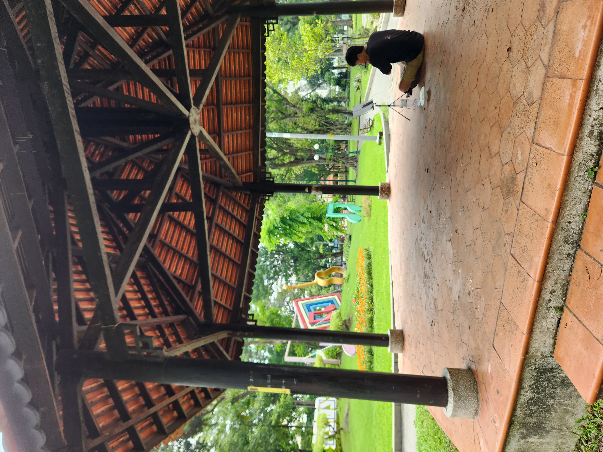
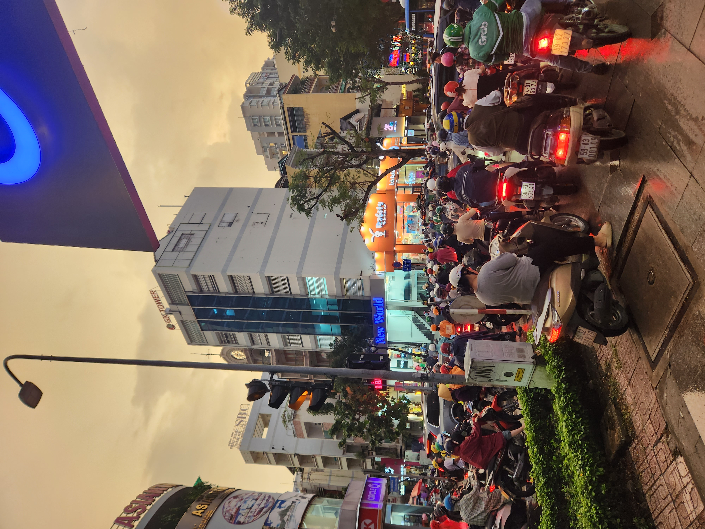

Trip To Ho Chi Minh
This week was the Jewish new year (Rosh Hashanah) so I got Thursday and Friday off. I got to know about the fact that I got those days off 2 weeks ago. So I quickly bought a visa for Vietnam and booked a flight. You see, for Singaporeans it's just a regular day. So the flight prices were really cheap!
So I booked a flight (3.10 - 6.10), the flight back is at 9 am. So hopefully I will wake up to it on time. For this trip I wanted to just chill in the city and let time pass by for a bit. I've been doing that but honestly it's been a bit boring.
Something I realized is that when I land somewhere I'm always grumpy on the first day, so the day I landed I was quite annoyed by the city. And deep down I wished I was at Singapore! Funny feeling, I was missing my local friends and the pottery lessons I started taking in Singapore. And my Piano!
The second day was quite okay, well it started well, I woke up and everything was falling into place. Until 2 old vietnamese men started fixing my shoes out of nowhere and then asked for a ridiculous amount of money.

After that I went to a local pottery place as I wanted to learn how they do it in Vietnam. And I'm happy I went, they taught me a lot of more natural practices that don't use a lot of gadgets, and the guy there was super nice.
 
Then I just wandered around the city. Played some Piano at local shops, made some calls back home to friends I haven't talked with in a while. And then I sat at a pub and met 2 old guys (at their 70s). Cookie and Phil. Weird fellas. But I think if you're single by that age you have to be weird. And then I went to sleep.
  
I'm writing this now on the third day, because honestly. I'm quite bored. But It's a good kind of being bored, I feel like I'm actually resting. Which I guess I needed. Also sleeping a lot has been great. Again I'm at a point where I didn't know how tired I was. Wonder what this day has in store for me.
I wanted to stop writing after the last paragraph, but my blog my rules. It's the night of the third day now. I feel like today was a repeat of yesterday, I went to pottery. Went to explore the city, sat in the same coffee places. Really nothing new. I did meet a German guy here on the first day, saw him again today. He's pretty weird, he really likes sports and talks mostly about it. I guess I'm not better though with the pottery. Well the funny thing with him is that when I said that I'm here because of the Jewish new year he didn't understand me. At least until I said "Yuden", which is the slur the Germans used for us in the Holocaust (and also the way they say jews in german I think). Other than that, great fella. He is a bot though.